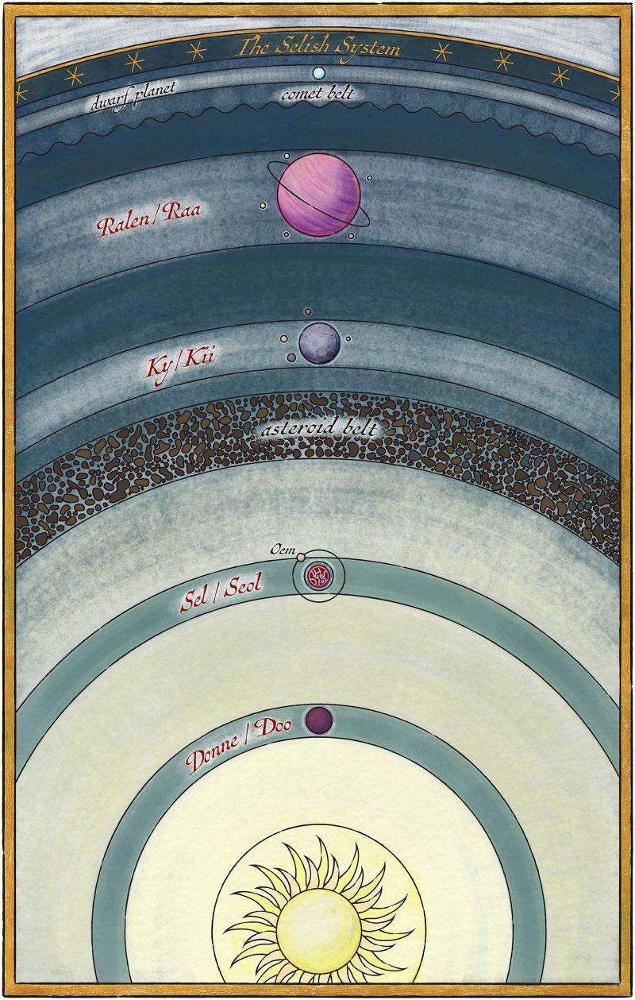
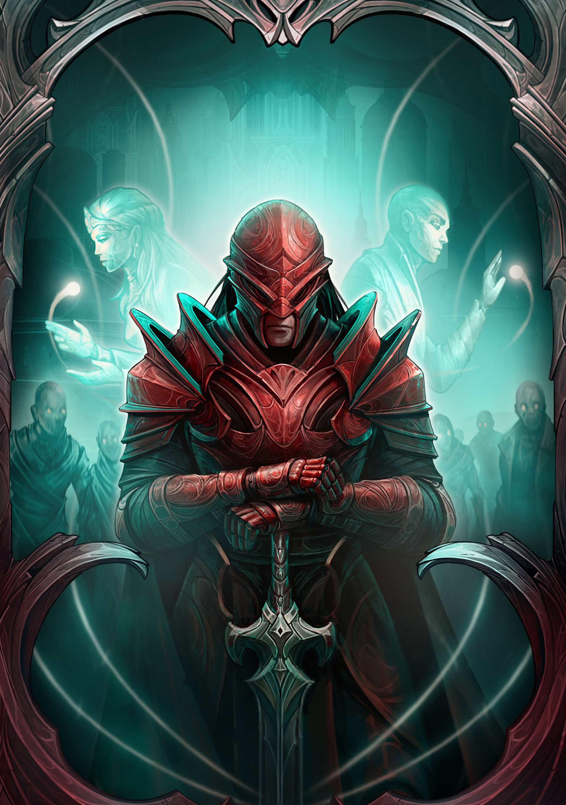

SEL
Sel, also known as Seol, is a relatively large planet, home to diverse landscapes and multiple great civilizations, including at least three empires.
The planet is steeped in powerful magic, shaped by the culture of its diverse people. The land itself is closely tied to its magic, emphasizing the importance of symbols, structure, and proximity to magical locations. Due to this, Sel experiences political upheavals and divine mysteries.

SELISH SYSTEM
The Selish system is the name given to the planetary system containing the planet of Sel. The system also contains three other planets, with an additional unnamed dwarf planet on the edge of the system.


INHABITANTS
The people of Sel are as varied as the magical systems that shape their world. In Arelon, the inhabitants are largely urban and mercantile, with a society built around trade, nobility, and a reverence for the now-fallen city of Elantris.
To the east, Fjorden is home to a more militant and theocratic society. Fjordell culture values discipline, unity, and religious authority, led by a powerful priesthood known as the Dakhor. Other regions of Sel, like Teod and Duladel, each bring their own customs, political systems, and interpretations of the Dor.
AONDOR
AonDor is the central magic system of Arelon, powered by the Dor, a mysterious energy source that exists beneath the surface of Sel. Practitioners of AonDor, called Elantrians, use intricate symbols known as Aons to channel this power. Each Aon represents a concept, like light or movement, and drawing them correctly allows the user to produce magical effects such as healing, teleportation, or energy blasts.
However, AonDor is deeply tied to geography. The symbols must reflect the user's location in the world, and even slight changes to the land can disrupt their effectiveness. This makes the magic uniquely sensitive and rooted in the land of Arelon itself. After the fall of Elantris, AonDor became unstable and weak, but its return marks a resurgence of magical potential in the region.